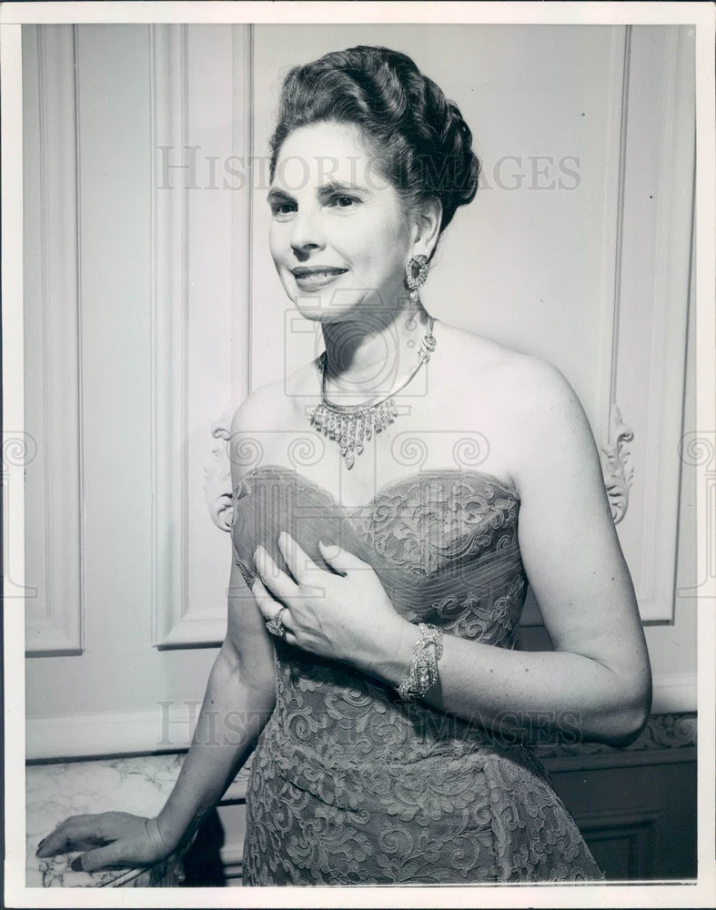
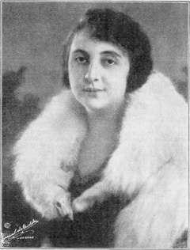
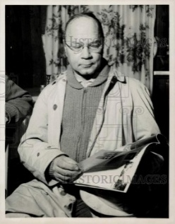
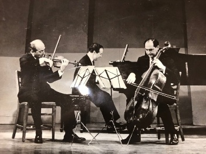

Key to appreciating the longevity of CCMS is understanding the motivation and dedication of its founders who left us an inspiring legacy. One founder in particular led the way, Mrs. Raymond Redheffer (Dr. Ruth Alexander). In 1935, Mrs. Redheffer, having degrees in both music and economics, including a Ph.D. in economics from Northwestern University, was acutely aware of the profound impact the Depression was having on the well-being of Chicago’s classical music community. Opportunities for musicians to share their talents were extremely limited; they were denied the joy of playing their instruments and audiences were denied the pleasure of hearing many great Chicago artists. Little attention was given to the total absence of venues for chamber music at this time.
Recognizing the hardships, Mrs. Redheffer was able to bring together a group of influential women known to be concerned and generous patrons of the arts: Mrs. Lolita Ogden Armour, widow of meatpacking magnate Ogden Armour; Mrs. Royal Davis, former Hollywood actress, wife of Northwestern neurosurgeon Dr. Royal Davis and mother of Nancy Reagan. Also committed to the society’s purpose was Mrs. Otto Eitel, wife of prominent Chicago hotelier Otto K. Eitel of the Bismarck Hotel. They co-published From Bach to Gershwin, a music calendar that graphically depicted the timelines of major composers from the 18th to 20th century. Other founders were Lydia Swift, Mrs. Barrett Wendell, Mrs. Jason Whitney, and Mrs. Arthur Wirtz — wife of the owner of the Blackhawks. This notable and industrious group of women established Chicago Chamber Music Society.



Initially, CCMS was closely associated with the Russian Trio (name changed to the Pro Musica Trio in 1948), an ensemble of esteemed musicians consisting of Russian born pianist, Nina Mesirow-Minchin; Polish-Russian born violinist, Michael Wilkomirski; and Argentinian born, world-renowned cellist, Ennio Bolognini. CCMS was the “business” partner, both sponsoring and managing the trio. At the beginning, financial support came from the philanthropy of the society’s board of directors. CCMS arranged a yearly concert series highlighting the trio exclusively. At first the trio played in drawing rooms; as they gained recognition CCMS developed a yearly series of concerts given at the Fine Arts Club. The society was also instrumental in arranging and promoting the trio’s performances for other venues including ones in Washington and New York. The trio’s 1937 success at New York’s Town Hall was considered a “triumph” and as stated in the Chicago Daily Tribune of February 14, 1937, yielded “80 signed concerts for the next season, one being at the White House in Washington.”



As the trio’s reputation grew, the support from CCMS was no longer needed. In the 1950s the society shifted its focus, developing subscription-based concert series and inviting acclaimed local, national and international chamber music artists to perform. CCMS concert audiences have been extremely loyal over the years and have been introduced to both rising and established artists, seeing and hearing them in a chamber music setting, often for the first time.


Early concerts were held in a variety of places that included the Bismarck Hotel, Drake Hotel, the Fortnightly of Chicago, Casino Club and Fine Arts Club. Since 1976 the concerts have been held in the ballroom of the Woman’s Athletic Club, where the size of the room allows the audience to enjoy chamber music in an intimate setting for which chamber music is intended. Joan Blew, long-time board member and past president of the Society reflected: “In the 1600s chamber music began with guests seated close to the musicians, even seeing the expressions on their faces. The intimacy of the event is something we try to preserve.”
In addition to the concerts, CCMS has offered their subscribers post-concert teas, lunches and formal dinners after evening performances. Additionally, in recent years, CCMS provides their subscribers with special events. These have included presentations from conductor Alan Heatherington, Jonathan McCormick of the Civic Orchestra, violin historian Julian Hersh; music critic Wayne Delacoma, WFMT host Robbie Ellis; composer Augusta Reed Thomas, and Uniting Voices Chicago (formerly Chicago Children’s Choir) president and artistic director, Josephine Lee.
Recognizing that it is important to maintain its existing audience and grow new supporters of chamber music, CCMS personally reaches out to its community of subscribers. By bringing their guests to our concerts, subscribers have been essential partners in sustaining CCMS.
For years, CCMS has also been engaged in a program to encourage new audiences for chamber music by committing one concert a year to high school students. Between 15 to 20 students attend. Prior to the concert they are given a special lecture orienting them to the composers and the music that will be played. After the concert they have the opportunity to meet with the artists, learn about their instruments, love of music and motivations to becoming musicians.

CCMS has also had the tradition of commemorating important events and anniversaries. Welcoming the Millennium, the Society commissioned a chamber piece by Chicago composer and journalist Dan Tucker, who chose to set to music writings of Carl Sandburg. Up in Rootabaga Country was performed by the Chicago Ensemble at the Cultural Center in September 1999.
To celebrate its 75th season, CCMS invited graduate students studying music composition at Chicago universities to submit works from which judges selected a composer to write a new composition for string quartet to be played at a CCMS evening concert. A small group of CCMS Board members and Augusta Reed Thomas, composer and University of Chicago professor, judged the submissions and selected Ben Hjertmann, a graduate student from Northwestern University. Hjertmann’s composition, Eos, was performed by the Borromeo Quartet at a celebratory concert in 2012.
In honor of CCMS’s 80th anniversary, CCMS sponsored one of Pianoforte’s Salone series broadcasts with the Zodiac Trio. The performance was broadcast live on WFMT.
Now, in celebration of their 90th anniversary, CCMS has undertaken a three-year initiative with DePaul University’s music department to help student performers with career development. Each year DePaul has a chamber music competition. The winners of the competition receive cash prizes and, in addition, CCMS will support the 2026, 2027 and 2028 winners by providing funds for the production of video recordings of their off-campus concerts. “The videos will be particularly valuable to the groups and individuals, because most audition processes now begin with the submission of videos,” stated Gay Stanek, CCMS Vice President of Programming.
Since 2007, the continued success of CCMS’s concerts has been in Gay’s able hands. Her creativity, professionalism and dedication to chamber music is unequaled. Her knowledge of music and fine ear for finding the very best talent to perform has been at the heart of the Society and keeps us ‘beating.’
During its 90 years CCMS has hosted 370 concerts where 234 national and international chamber groups have performed. Rather than old, CCMS feels 90 years young and wants to share its concerts with you. Remaining in the current season is the final concert on the evening of April 25th at 6:00 p.m. A reception and dinner will follow. Information on the concert, tickets and dinner reservations is on the CCMS website at chicagochambermusicsociety.org. If you cannot join us this season, please do for the 2026–2027 season.
You will be very welcomed!